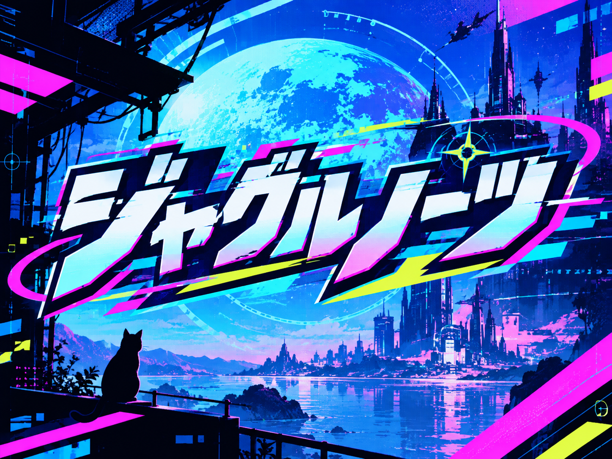

ジャグルノーツ 🌟

ジャグルノーツ 🌟
🔵 画面の
左側
をタップ＝左手 🔴 画面の
右側
をタップ＝右手（どこでもOK）
📖 ストーリー
🎵 曲選択へ
📊 記録
⚙ 設定
⛶ 全画面にする
iPhoneは「共有」→「ホーム画面に追加」から開くと全画面で遊べます
📖 ジャグルノーツ 〜笑顔の奏者〜
🧪テスト用 レベル：
クリア済み：
進行リセット
演奏パート：
ふつうに遊ぶ
クリア扱いで飛ばす
失敗扱いで飛ばす
※クリア済みにした話の特典は設定で選べます。初回クリアの表示を見たい話は、その1つ前までにしてください。
おたすけ
※ 話をクリアすると、次の話が読めるようになります
📚 キャラ図鑑
◀ メニューへ
📚 キャラ図鑑
◀ ストーリーへ
曲
難易度
🌱
かんたん
🎵
ふつう
🔥
むずかしい
⚡
すごくむずかしい
ノーツのパターン
固定
ノーマル
ダイナミック
🎵 スタート！
🎯 練習
← メインメニュー
🎯 練習モード
速度
開始
終了
🔁 ループ ON
🎯 同時ノーツの場所へ
練習では記録は保存されません
🎯 練習スタート
← 曲選択
設定
曲
100%
効果音
100%
iPhoneでは曲の音量は本体の音量ボタンで調整してください
背景・ボールの色
ボタン・タッチの左右
ふつう
反転
ふつう: 左手（Aキー・画面の左側）＝上のレーン、右手（Lキー・右側）＝下のレーン
反転: 右手（Lキー・画面の右側）＝上のレーン、左手（Aキー・左側）＝下のレーン（ピアノ譜のように右手が上）
ボールの形
ボールの見た目だけが変わります（青＝上のレーン／赤＝下のレーンの色はそのまま）
効果音の種類
タイミング調整
−
0 ms
＋
タップで自動計測
ボールが音より先に着く感じなら「＋」、遅い感じなら「−」
← メインメニュー
🔁 もう一度プレイ
📖 つづきを読む
🎵 曲選択に戻る
📊 記録
🔵
左手:
A
キー / 上半分割 🔴
右手:
L
または
J
キー / 下半分割
🔥
10コンボ到達でFEVERモード突入！
スコア倍率がアップ＆豪華背景演出！
⏸
⏸ 一時停止
▶ つづける
🔄 最初からやり直す
🎵 終了して曲選択へ
◀ 左手 TAP
TAP 右手 ▶
📱
スマホを横向きにしてください
あそびかた
A
L
PERFECT!
ボールが
輪に届いた瞬間
に押そう！ （ためしに押してみてね）
青
は
Aキー
（左手）／
赤
は
Lキー
（右手）
青
は
画面の左半分
／
赤
は
画面の右半分
をタップ
ピッタリでなくてもOK。まずは気楽に遊んでみてね
はじめる
もう一度、挑戦する？
🔁 もう一度挑戦
📖 話の一覧へ
スキップ ▶▶
✕ やめる
▼
やめる